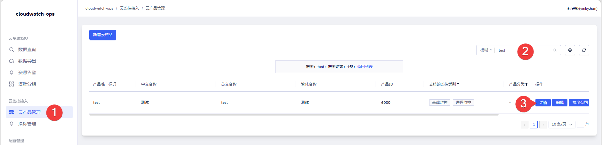
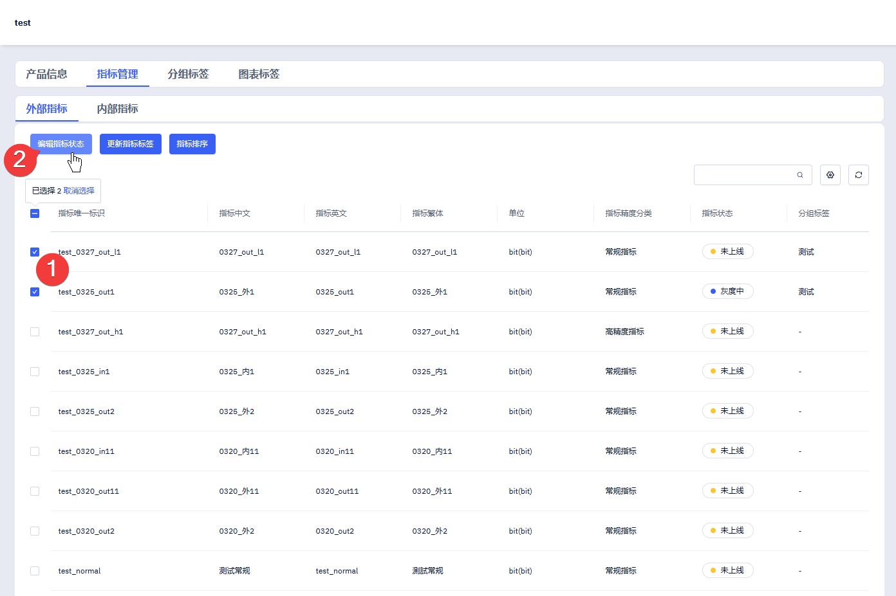
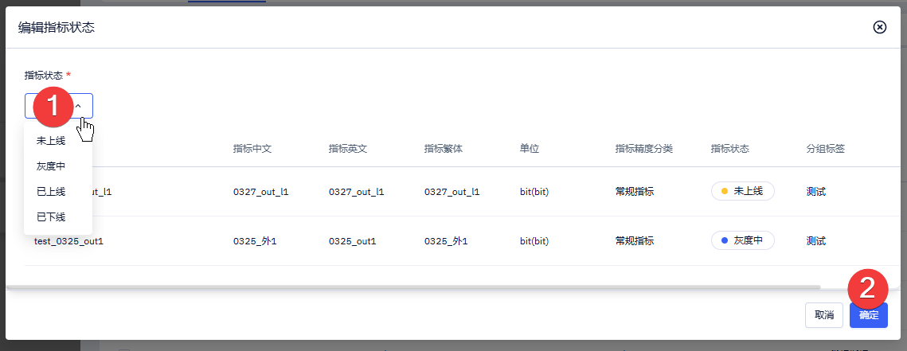
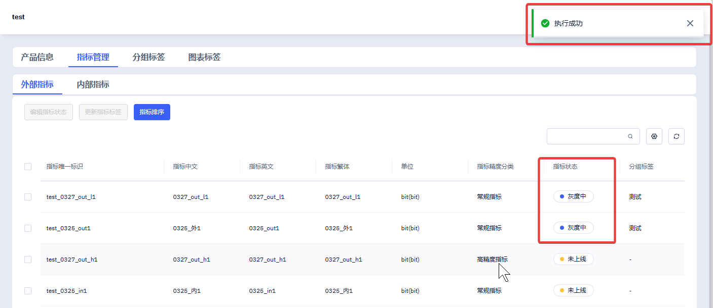

步骤 01
🚪进入产品详情页
从左侧导航依次进入「云监控接入 → 云产品管理」①，在搜索框中输入产品标识（如 test）②，在搜索结果中点击对应产品操作列的 详情 按钮 ③。

步骤 02
☑️选择目标指标
在产品详情页中切换到「指标管理」Tab，选择「外部指标」或「内部指标」子 Tab ①，通过左侧复选框勾选需要调整状态的指标 ②（支持多选），然后点击 编辑指标状态 按钮 ③。

💡
建议一次批量修改同一目标状态的指标，避免混淆。跨状态的指标建议分批次操作，减少误操作风险。
步骤 03
⚙️选择目标状态
在弹出的「编辑指标状态」对话框中，从下拉列表选择目标状态 ①，可选值包括：

| 状态值 | 含义 | 适用场景 |
|---|---|---|
未上线 | 指标已创建但尚未对客户可见 | 开发测试阶段、未完成验证的指标 |
灰度中 | 仅对灰度白名单内的用户可见 | 小范围验证、A/B 测试 |
已上线 | 对所有用户可见，正式发布 | 通过验证、全量开放的指标 |
已下线 | 已从控制台移除，不再可见 | 废弃指标、临时撤下 |
确认目标状态后，点击 确定 按钮 ② 提交。
⚠️
注意将指标从「已上线」改为「已下线」会立即从前端控制台移除，可能影响正在使用该指标的客户。建议先灰度验证再全量调整。
步骤 04
✅确认执行结果
提交后页面右上角弹出「执行成功」提示，回到指标列表中可以看到刚才选中的指标「指标状态」列已更新为目标状态，表示修改已生效。

ℹ️
提示指标状态变更实时生效，控制台会在刷新后立即展示最新状态。如未看到变化，可尝试刷新页面或检查是否选错了目标产品。
🎉
全部完成啦
指标状态已修改成功。前端控制台将根据新的状态值展示或隐藏对应指标，灰度中的指标仅对内测用户可见。
💬常见问题
修改状态后前端没有立即生效怎么办？
指标状态变更在后端是实时生效的，但前端可能有缓存。刷新浏览器页面或等待 1-2 分钟后重试。如仍不生效，请确认是否修改了正确的产品和指标。
「灰度中」和「已上线」状态有什么区别？
「灰度中」表示指标仅对灰度白名单内的用户可见，适合小范围验证；「已上线」表示指标对所有用户可见，属于正式发布状态。建议先在灰度环境验证指标数据正确性，再切换为已上线。
能否批量修改不同产品下的指标状态？
不支持跨产品批量操作。每次「编辑指标状态」仅作用于当前产品下已勾选的指标。如需修改多个产品的指标，需分别进入各产品的详情页操作。
已下线的指标能否恢复上线？
可以。重复本手册步骤，在下拉列表中选择「已上线」或「灰度中」即可恢复。已下线的指标数据不会丢失，只是从前端隐藏。
修改状态时提示「操作失败」怎么办？
常见原因包括：所选指标中包含已被删除的记录，或当前账号无操作权限。请刷新页面重新勾选，如问题持续存在，请联系系统管理员确认权限配置。